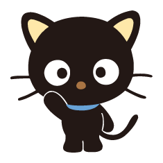

Chococat is one of the many fictional characters produced by Japanese corporation Sanrio. He is drawn as a sweet black cat with huge black eyes, four whiskers, and like counterpart Hello Kitty, no mouth. His name comes from his chocolate-colored nose. His eyes are white, a trait which sets him apart from most other Sanrio characters. His whiskers are able to pick up information like antennae, so he is often the first to know about things. Chococat is a very spunky cat who loves to play around. Chococat is one of the Sanrio characters, popular like Hello Kitty, he loves to fool around with his best pals.
Chococat has a group of friends who join him in his adventures, including: